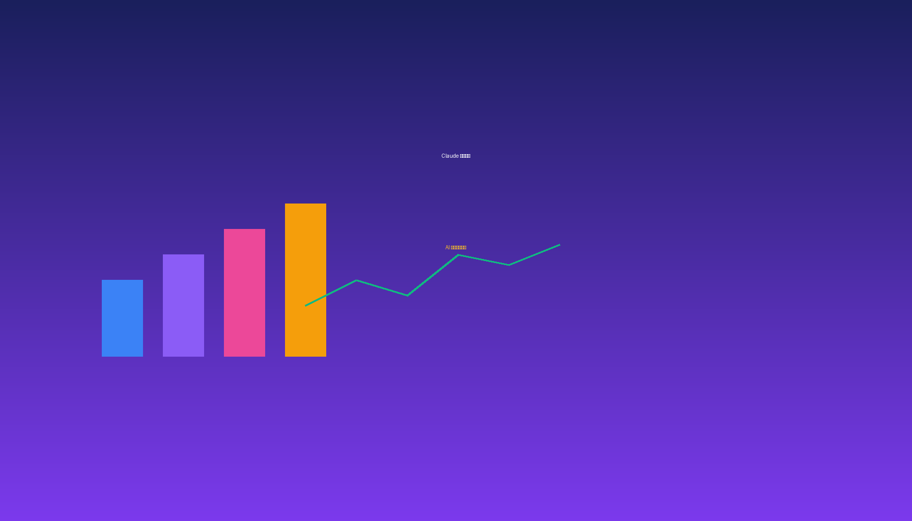

|
想象一下：凌晨两点，投行分析师还在加班整理财报、对比估值数据、调整财务模型……这是金融从业者的日常。但 Anthropic 最新推出的 Claude for Financial Services Plugins，可能彻底改变这一切。 |
Claude for Financial Services Plugins 是 Anthropic 专门为金融服务行业打造的一套 AI 插件系统。简单来说，它把 Claude 这个强大的 AI 助手，变成了金融专业人士的"超级搭档"。
|
📊 financial-analysis（财务分析）
核心插件，提供所有数据连接器，支持可比公司分析、DCF 建模等 |
|
💼 investment-banking（投资银行）
并购建模、买方清单、CIM/Teaser 制作、交易材料生成 |
|
📈 equity-research（股票研究）
研报撰写、投资逻辑跟踪、财报更新、晨会笔记 |
|
🎯 private-equity（私募股权）
尽职调查、IC 备忘录、投资组合管理、项目筛选 |
|
💰 wealth-management（财富管理）
客户规划、投资组合再平衡、税务损失收割 |
每个插件都集成了 41 项技能、38 个命令 和 11 个 MCP 数据连接器，可以直接对接 Daloopa、Morningstar、S&P Global、FactSet 等专业金融数据源。
传统流程：下载数据 → 整理 Excel → 制作图表 → 撰写报告 → 排版美化，需要 2-3 天。
|
🏗️ 传统方式： 手动整理数百页财报，对比十几家公司，反复调整格式 ✨ AI 方式： 一句话指令，自动拉取数据、生成模型、撰写报告、输出文档 |
现在只需告诉 Claude："帮我写一份关于特斯拉的最新研报"，它会自动完成数据拉取、估值模型、报告撰写和格式输出。
Claude 可以自动完成：
生成的 Excel 包含完整公式和蓝/黑/绿颜色编码，完全符合投行标准。
投行的日常高频工作也能被自动化：根据公司资料自动起草 CIM 各章节、生成专业 Teaser、制作买方清单、创建 Strip Profiles，甚至直接套用公司的 PPT 模板生成路演材料。
股票研究员可以自动监控财报发布、生成 Earnings Update、撰写晨会笔记；PE 机构可以从项目筛选、尽职调查到 IC 备忘录全程自动化；财富管理顾问可以生成个性化财务规划、监控投资组合、识别税务损失收割机会。
这套插件最厉害的地方在于 MCP（Model Context Protocol）数据连接器——可以理解为 AI 和外部数据源的"通用翻译器"。
通过 MCP，Claude 可以直接连接：
|
⚡ 效率提升
传统投行分析师 60-70% 时间花在数据整理上，AI 可以将这些工作自动化，让分析师专注深度分析和判断 |
|
✅ 质量保证
人工操作难免出错，AI 可以确保数据一致性和准确性，大幅降低错误率 |
|
📚 知识沉淀
把公司的分析模板、估值方法"教"给 Claude，资深分析师的经验可以被沉淀下来 |
如果你已经在使用 Claude for Enterprise，可以通过以下方式安装：
通过 Claude Cowork（图形界面）：
访问 claude.com/plugins，搜索 "financial-services-plugins" 即可安装。
通过 Claude Code（命令行）：
|
# 添加插件市场
claude plugin marketplace add anthropics/financial-services-plugins
# 先安装核心插件（必须先装这个）
claude plugin install financial-analysis@financial-services-plugins
# 然后根据需要安装其他插件
claude plugin install investment-banking@financial-services-plugins
|
GitHub 开源地址：https://github.com/anthropics/financial-services-plugins
|
AI 不是在替代分析师，而是在增强他们的能力。 |
🔗 相关资源：
GitHub 开源地址：github.com/anthropics/financial-services-plugins
Claude 官网：claude.com/plugins